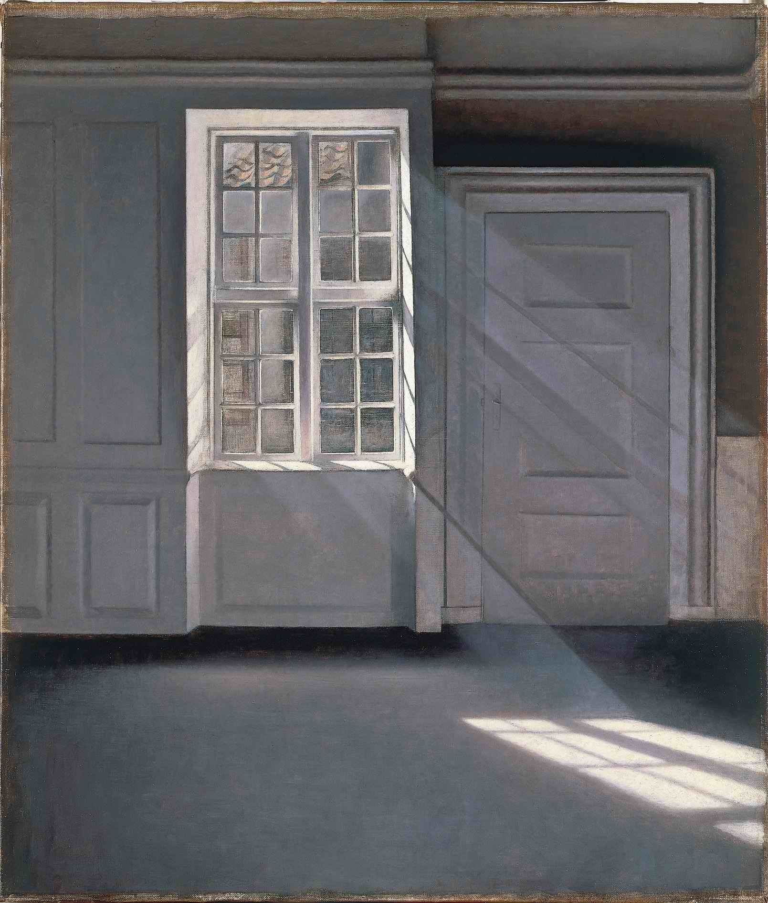

← 目次“I didn’t want any more loitering in the shade, and I made haste towards the station. When near the buildings I met a white man, in such an unexpected elegance of get-up that in the first moment I took him for a sort of vision. I saw a high starched collar, white cuffs, a light alpaca jacket, snowy trousers, a clean necktie, and varnished boots. No hat. Hair parted, brushed, oiled, under a green-lined parasol held in a big white hand. He was amazing, and had a penholder behind his ear.
I saw a high starched collar, white cuffs, a light alpaca jacket, snowy trousers, a clean necktie, and varnished boots. No hat.
“I shook hands with this miracle, and I learned he was the Company’s chief accountant, and that all the book-keeping was done at this station. He had come out for a moment, he said, ‘to get a breath of fresh air. The expression sounded wonderfully odd, with its suggestion of sedentary desk-life. I wouldn’t have mentioned the fellow to you at all, only it was from his lips that I first heard the name of the man who is so indissolubly connected with the memories of that time. Moreover, I respected the fellow. Yes; I respected his collars, his vast cuffs, his brushed hair. His appearance was certainly that of a hairdresser’s dummy; but in the great demoralization of the land he kept up his appearance. That’s backbone. His starched collars and got-up shirt-fronts were achievements of character.
His appearance was certainly that of a hairdresser’s dummy; but in the great demoralization of the land he kept up his appearance. That’s backbone.
He had been out nearly three years; and, later, I could not help asking him how he managed to sport such linen. He had just the faintest blush, and said modestly, ‘I’ve been teaching one of the native women about the station. It was difficult. She had a distaste for the work.’ Thus this man had verily accomplished something. And he was devoted to his books, which were in apple-pie order.
“Everything else in the station was in a muddle—heads, things, buildings. Strings of dusty niggers with splay feet arrived and departed; a stream of manufactured goods, rubbishy cottons, beads, and brass-wire sent into the depths of darkness, and in return came a precious trickle of ivory.
“I had to wait in the station for ten days—an eternity. I lived in a hut in the yard, but to be out of the chaos I would sometimes get into the accountant’s office. It was built of horizontal planks, and so badly put together that, as he bent over his high desk, he was barred from neck to heels with narrow strips of sunlight. There was no need to open the big shutter to see. It was hot there, too; big flies buzzed fiendishly, and did not sting, but stabbed. I sat generally on the floor, while, of faultless appearance (and even slightly scented), perching on a high stool, he wrote, he wrote. Sometimes he stood up for exercise. When a truckle-bed with a sick man (some invalid agent from upcountry) was put in there, he exhibited a gentle annoyance. ‘The groans of this sick person,’ he said, ‘distract my attention. And without that it is extremely difficult to guard against clerical errors in this climate.’
I sat generally on the floor, while, of faultless appearance (and even slightly scented), perching on a high stool, he wrote, he wrote.
“One day he remarked, without lifting his head, ‘In the interior you will no doubt meet Mr. Kurtz.’ On my asking who Mr. Kurtz was, he said he was a first-class agent; and seeing my disappointment at this information, he added slowly, laying down his pen, ‘He is a very remarkable person.’ Further questions elicited from him that Mr. Kurtz was at present in charge of a trading-post, a very important one, in the true ivory-country, at ‘the very bottom of there. Sends in as much ivory as all the others put together...’ He began to write again. The sick man was too ill to groan. The flies buzzed in a great peace.
The sick man was too ill to groan. The flies buzzed in a great peace.
“Suddenly there was a growing murmur of voices and a great tramping of feet. A caravan had come in. A violent babble of uncouth sounds burst out on the other side of the planks. All the carriers were speaking together, and in the midst of the uproar the lamentable voice of the chief agent was heard ‘giving it up’ tearfully for the twentieth time that day.... He rose slowly. ‘What a frightful row,’ he said. He crossed the room gently to look at the sick man, and returning, said to me, ‘He does not hear.’ ‘What! Dead?’ I asked, startled. ‘No, not yet,’ he answered, with great composure. Then, alluding with a toss of the head to the tumult in the station-yard, ‘When one has got to make correct entries, one comes to hate those savages—hate them to the death.’ He remained thoughtful for a moment. ‘When you see Mr. Kurtz’ he went on, ‘tell him from me that everything here’—he glanced at the deck—‘is very satisfactory. I don’t like to write to him—with those messengers of ours you never know who may get hold of your letter—at that Central Station.’ He stared at me for a moment with his mild, bulging eyes. ‘Oh, he will go far, very far,’ he began again. ‘He will be a somebody in the Administration before long. They, above—the Council in Europe, you know—mean him to be.’
‘Oh, he will go far, very far,’ he began again. ‘He will be a somebody in the Administration before long.’
“He turned to his work. The noise outside had ceased, and presently in going out I stopped at the door. In the steady buzz of flies the homeward-bound agent was lying finished and insensible; the other, bent over his books, was making correct entries of perfectly correct transactions; and fifty feet below the doorstep I could see the still tree-tops of the grove of death.
“Next day I left that station at last, with a caravan of sixty men, for a two-hundred-mile tramp.